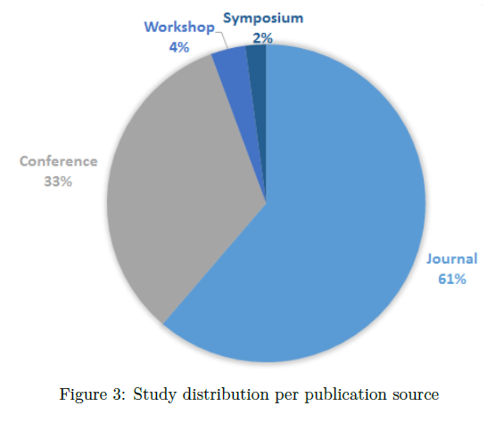
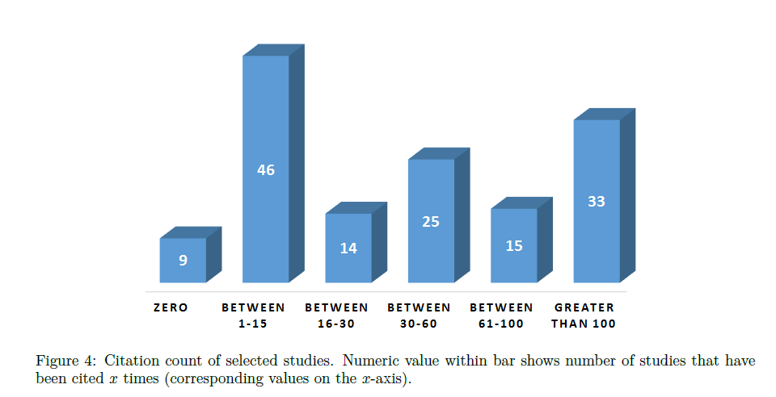
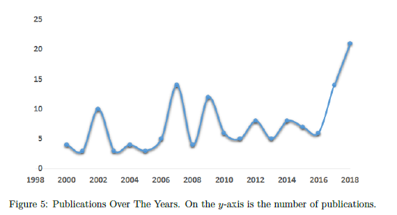
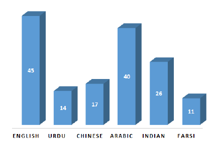
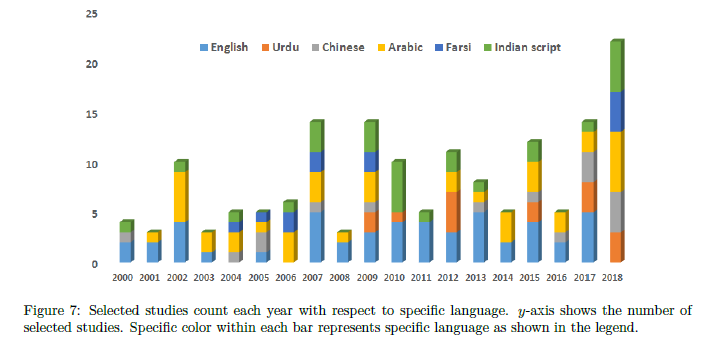
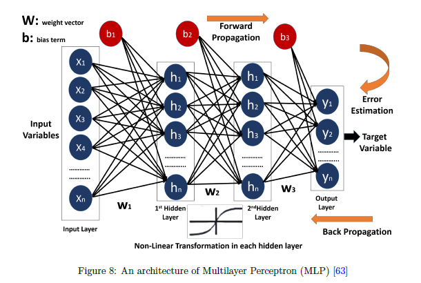
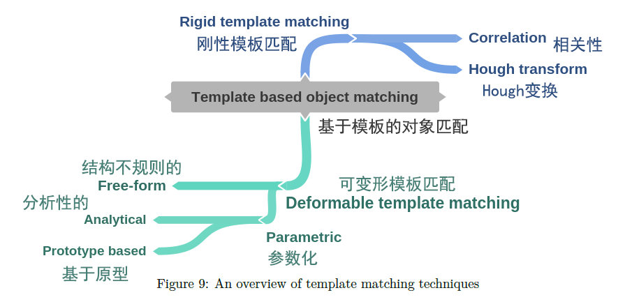
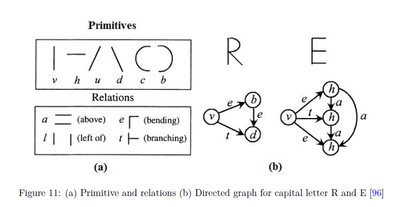
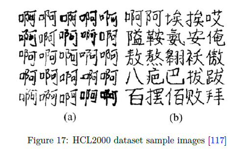
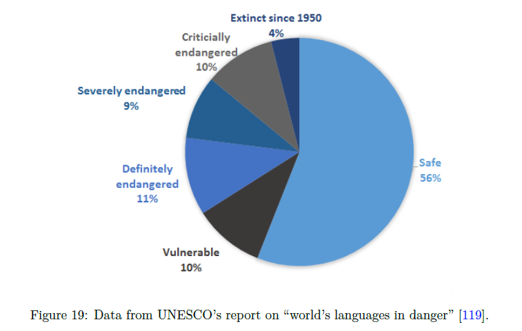

相关资源
论文
Abstract
由于手写文件在人们日常生活中普遍存在（ubiquity），OCR 技术具有宝贵的实际应用价值。OCR 技术可以将各种类型的文件或图像翻译成可分析（analyzable）、可编辑（editable）和搜索（searchable）的数据。过去 10 年中，研究人员利用人工智能 / 机器学习 等工具自动分析手写（handwritten）和印刷文件（printed documents）以将其转换成为电子格式（electronic format）。这篇论文目的是总结手写文件在字符识别（character recognition）方面已经进行的研究，并提供研究方向。在本系统文献综述（Systematic Literally Review）（SLR）中，我们收集、综合和分析了 2000 年至 2018 年期间发表的有关手写 OCR 以及密切相关的主题（closely related topics）的研究文章。
Keywords: Optical character recognition, classification, languages, feature extraction, deep learning
1 Introduction
OCR 是一个将输入的文本（input text）转换为机器编码格式（encoded format）的系统。[^1]今天，OCR 有助于将中世纪（medieval）的手稿数字化（digitizing）[^2]，也有助于将打字文件（typewritten documents）转换成数字形式（digital form）。[^3]这使得所需信息的检索更加容易，因为人们不必翻阅成堆的文件和档案来搜索所需信息。各组织正在满足历史数据（historic data）[^4]法律文件（law documents）[^5]教育持久性（educational persistence）[^6]等方面的数字保存需求。
一个 OCR 系统主要取决于特征的提取（extraction of features）和这些特征的辨别（discrimination）/ 分类（classification）（基于模式（based on patterns））。
Handwritten OCR 作为 OCR 一个子领域受到越来越多的关注。根据输入的数据进一步分为 offline system [^7, 8]和 online system[^9]。
- Offline system是一个静态系统，输入数据是以扫描图像（scanned images）的形式出现的。
- Online system 输入的性质更加动态（more dynamic），是基于具有一定速度（having certain velocity），投影角度（projection angle），位置（position）和定位点（locus point）的笔尖运动（the movement of pen tip）。因此， online system 被认为是更复杂和先进的，因为它解决了 offline system 中存在的输入数据重叠的问题。
-
最早的 OCR 系统是在 19 世纪 40 年代开发的，随着时间的推移和技术的进步，系统变得更加健壮（more robust），可以处理印刷（printed）字符和手写字符（handwritten characters），导致了 OCR 机器的商业可用性。
-
1965 年在纽约世博会推出先进的阅读机器“IBM 1287”[^10]，这是有史以来第一台能够读取手写数字的光学阅读器（optical reader）。
-
20 世纪 70 年代，研究人员专注于提高 OCR 系统的响应时间（response time）和性能（performance）。
-
自 1980 年到 2000 年，OCR 系统主要被开发（developed）并部署（deployed）在教育机构。census OCR[11]用于识别金属条上的压印字符[12]。
-
在 2000 年代初期，引入了二值化技术（binarization techniques），以数字形式保存历史文献（preserve historical documents）并为研究人员提供访问这些文件的途径[^13, 14, 15, 16]。Some of the challenges of binarization of historical documents 是使用非标准字体（nonstandard fonts）、印刷噪声（printing noise）和间距（spacing）。
-
2000 年代中期推出了多种应用程序，对不同能力的人有帮助，帮助这些人提高阅读和写作技能。
在当前的十年中，研究人员研究了不同的机器学习方法：
- Support Vector Machine（SVM）
- Random Forests（RF）
- k Nearest Neighbor（kNN）
- Decision Tree（DT）[^17, 18, 19]
研究人员将这些机器学习技术与图像处理技术相结合，以提高 OCR 系统的准确性。
最近研究人员专注于开发 digitization of handwritten documents，主要基于 deep learning[^20]方法。这种模式的转变是由于集群计算（adaption of cluster computing）和 GPU 对深度学习架构适应性更好而引发的[^21]。
- 递归神经网络（Recurrent Neural Networks，RNN）
- 卷积神经网络（Convolutional Neural Network，CNN）
本 SLR 不仅旨在介绍不同语言 OCR 领域的文献，还将通过突出当前 OCR 系统中需要进一步调查的薄弱领域，为新研究者强调研究方向。
This article is organized as follows.
- 第 2 节 讨论了本文采用的综述方法（review methodology）。
- 综述协议（review protocol）
- 纳入和排除标准（inclusion and exclusion criteria）
- 搜索策略（search strategy）
- 选择过程（selection process）
- 质量评估标准（quality assessment criteria）
- 选定研究的元数据综合（meta data synthesis of selected studies）
- 第 3 节 阐述了选定研究的统计数据。
- 第 4 节 提出了研究问题及其动机。
- 第 5 节 讨论了用于 handwritten OCR 的不同分类方法，还将阐述 optical character recognition 的 structural 和 statistical。
- 第 6 节 将介绍针对特定语言的不同数据库。
- 第 7 节 将介绍 OCR 中特定语言研究的研究概况。
- 第 8 节 将强调研究趋势。
- 第 9 节 将对这一综述结果进行总结，并将强调需要研究界关注的研究差距。
2 Review methods
如上所述，本系统文献综述（SLR）旨在通过制定研究问题和选择相关研究来识别和展示有关 OCR 的文献。因此，总结本综述是：
- 总结关于不同语言手写字符识别系统的现有研究工作（机器学习技术和数据库）。
- 突出研究弱点，以便通过额外的研究消除这些弱点。
- 确定 OCR 领域内的新研究领域。
我们将遵循 Kitchenham 等人提出的策略[^22]。根据提出的策略，讨论：
- 综述协议（review protocol）
- 纳入和排除标准（inclusion and exclusion criteria）
- 搜索策略过程（search strategy process）
- 选择过程（selection process）
- 数据提取（data extraction）
- 合成过程（synthesis processes）
2.1 Review protocol
遵循系统文献综述（SLR）的理念、原则和措施[^22]，该协议确定了：
- 研究背景（review background）
- 搜索策略（search strategy）
- 数据提取（data extraction）
- 研究问题（research questions）
- 质量评估标准（quality assessment criteria）
用于研究选择和数据分析。
综述方案是 SLR 与传统文献综述或叙述性综述之间的区别所在[^22]。
2.2 Inclusion and exclusion criteria
确保只纳入和研究相关的文章。包括：
- 英语（English）
- 乌尔都语（Urdu）
- 阿拉伯语（Arabic）
- 波斯语（Persian）
- 印度语（Indian）
- 汉语（Chinese）
只考虑 2000 年 1 月至 2018 年 12 月发表的研究。
2.3 Search strategy
自动搜索策略（automatic search），选用：
- IEEE Explore
- ISI Web of Knowledge,
- ScopusâATElsevier
- Springer.
不选用
- magazine
- working papers
- news papers
- books
- blogs
因为它们的质量无法得到可靠地验证。
从主要的关键词集合中找出尽可能多的文章，如：
- optical character recognition
- pattern recognition and OCR
- pattern matching and OCR
使用了书目管理工具 Mendeley。
2.4 Study selection process
选择研究时采用了 tollgate 方法[^23]。完成自动搜索阶段后，我们开始手动搜索程序，以保证搜索结果的详尽性。
使用质量评估标准（QAC）。
2.5 Quality assessment criteria
质量评估标准（QAC）基于对所选研究的总体质量（overall quality）做出决定的原则[^22]。以下标准用于评估选定研究的质量：
- Are topics presented in research paper relevant to the objectives of this review article?
- 研究论文中提出的主题是否与本文的目标相关？
- Does research study describes context of the research?
- 研究报告是否描述了研究的背景？
- Does research article explains approach and methodology of research with clarity?
- 研究文章是否清晰地解释了研究的方法和方法？
- Is data collection procedure explained, If data collection is done in the study?
- 如果研究中进行了数据收集，是否解释了数据收集的程序？
- Is process of data analysis explained with proper examples?
- 是否用适当的例子解释了数据分析的过程？
这 5 种 QA 模式的灵感来自[^23]。每个问题被分配 2 分，如果得分低于 5 分则不包括在研究中。
2.6 Data extraction and synthesis
我们提取了所选研究的元数据（meta data）。我们使用 Mendeley 和 MS Excel 来管理这些元数据。包含：
- study ID（识别每项研究）
- study title
- authors
- publication year
- publishing platform（会议记录 conference proceedings，期刊 journals）
- 引文计数 citation count
- 研究背景 study context（techniques used in study）
等数据被提取并被记录在 Excel 表中。
| Selected Features | Description |
|---|---|
| Study identification number | Exclusive identity for selected research article 选定研究文章的唯一标识 |
| Reference 参考文献 | 参考书目（Bibliographical Reference i.e）. Authors, title, publication year etc |
| Type of paper | 期刊（Journal）, 会议（conference）, 研讨会（workshop）,座谈会（symposium） |
| Language | English, Urdu, Chinese, Arabic, Indian, Farsi / Persian |
| Citation Count 引文计数 | Number of Citations |
| Technique 技术 | 特征提取和分类计数（Feature extraction and classification techniques） |
3 Statistical results from selected studies
3.1 Publication sources overview
-
Majority of included studies (87) were published in research journals (61%)
-
followed by 47 publications in conference articles (33%).
-
Whereas, few (5) articles were published in workshop proceedings
-
and only 3 relevant articles were found to be presented in symposiums.

3.2 Research citations
引用次数从 Google Scholar 获得。
-
approximately 95% of the selected studies have at least one citation, excerpt few paper which are published recently in 2018.
-
Among selected studies, 33studies have more than 100 citations,
-
15studies have been cited between 61-100 times,
-
25studies were cited between 33-60 times,
-
14studies were cited between 16-30 times
-
and 46studies were cited between 1 and 15 times.
总体而言，我们预测选定的研究引用将进一步增加，因为研究文章不断在该领域发表。

这些文章可以被认为对致力于建立强大 OCR 系统的研究人员有很大的影响。
- Offline handwriting recognition with multidimensional recurrent neural networks.
- Handwritten numeral databases of Indian scripts and multistage recognition of mixed numerals.
- A novel connectionist system for unconstrained handwriting recognition.
- Markov models for offline handwriting recognition: a survey
- Gujarati handwritten numeral optical character reorganization through neural network.
- Handwritten character recognition through two-stage foreground sub-sampling.
- Deep, big, simple neural nets for handwritten digit recognition.
- Diagonal based feature extraction for handwritten character recognition system using neural network.
- Convolutional neural network committees for handwritten character classification.
- Handwritten English character recognition using neural network.
- DRAW: A recurrent neural network for image generation.
- Online and off-line handwriting recognition: a comprehensive survey.
- Template-based online character recognition.
- An overview of character recognition focused on off-line handwriting.
- IFN/ENIT-database of handwritten Arabic words.
- Off-line Arabic character recognitionâASa review.
- A class-modular feedforward neural network for handwriting recognition.
- Individuality of handwriting.
- HMM based approach for handwritten Arabic word recognition using the IFN/ENIT-database.
- Handwritten digit recognition: benchmarking of state-of-the-art techniques.
- Indian script character recognition: a survey.
- Online recognition of Chinese characters: the state-of-the-art.
- A study on the use of 8-directional features for online handwritten Chinese character recognition.
- Offline Arabic handwriting recognition: a survey.
- Recognition of off-line handwritten devnagari characters using quadratic classifier.
- Connectionist temporal classification: labeling unsegmented sequence data with RNN.
- Text-independent writer identification and verification on offline arabic handwriting.
- A novel approach to on-line handwriting recognition based on bidirectional LSTM networks.
- Fuzzy model based recognition of handwritten numerals.
- Introducing a very large dataset of handwritten Farsi digits and a study on their varieties.
- Unconstrained on-line handwriting recognition with recurrent neural networks
- ICDAR 2013 Chinese handwriting recognition competition.
- Automatic segmentation of the IAM off-line database for handwritten English text.
3.3 Temporal view

我们相信 handwritten OCR 的应用领域将在未来几年进一步增加。
3.4Language specific research

- Total number of selected studies are 142 and out of these 142studies
- English language has the highest contribution of 45studies in the domain of character recognition
- 40studies related to Arabic language
- 26studies are on the Indian scripts
- 17 on Chinese language
- 14 on Urdu language
- while 11studies were conducted on Persian language.
- Some of the selected articles discussed multiple languages.

4 Research questions
| Research question | Motivation |
|---|---|
| What different feature extraction and classifications methods are used for handwritten OCR? | 确定近二十年来使用的特征提取器（feature extractors）和机器学习技术（machine learning techniques）的趋势。 |
| What different datasets / databases are available for research purpose? | 拥有足够的数据集是建立 OCR 系统的基本要求[^55]。 |
| What major languages are investigated? | 强调哪些语言通常已经被调查过。从而确定哪些语言需要更多的研究关注。 |
| What are the new research domains in the area of OCR? | 为新的研究项目提供指导。 |
5 Classification methods of handwritten OCR
在手写 OCR 中，算法在已知数据集上训练，并发现如何准确地对字母和数字进行分类。分类是在给定输入数据上学习模型并将其映射或标记到预定义的一个或多个类别的过程[^17]。
5.1 Artificial Neural Networks (ANN)
受生物神经元启发的结构，人工神经网络（ANN）由许多称为神经元的处理单元组成[^56]。
前馈网络/多层感知器（MLP）在 1980 年代中期重新引起了研究界的兴趣，因为当时“ Hopfield 网络”提供了理解人类记忆和计算神经元状态的方法[^58]。随着深层（多层）神经架构的出现，即递归神经网络（RNN）和卷积神经网络（CNN），神经网络已成为包括 OCR 在内的识别任务的最佳分类技术之一[^59，60，61，62]。

MLP 在手写 OCR 中的早期实现是由 Shashher 等[^64]在乌尔都语上完成的。利用误差反向传播(back-propagation, BP)算法估计的连接权值，采用一个隐层，使误差平方准则（squared error criterion）最小。
最近，美国有线电视新闻卷积神经网络(CNN)报道了在字符识别任务中取得的巨大成功[67]。卷积神经网络已被广泛用于本系统文献综述所涉及的几乎所有语言的分类和识别[68, 69, 70, 71, 72, 73]。
5.2 Kernel methods
许多强大的基于内核（kernel-based）的学习模型，如：
- Support Vector Machines（SVMs）
- Kernel Fisher Discriminant Analysis（KFDA）
- Kernel Principal Component Analysis (KPCA)
在分类问题上已经显示出实际意义。例如在
- 光学图案的背景 the context of optical pattern
- 文本分类 text categorization
- 时间序列预测 time-series prediction
具有显著相关性。
在支持向量机中，内核将特征向量映射到更高维的特征空间中，以找到一个超平面，该超平面以尽可能多的余量线性地将类别分开。
在深度学习方法普及之前，SVM 是手写数字识别、图像分类、人脸检测、对象检测和文本分类最强大的技术之一[^74]。核费舍尔判别分析 （KFDA） 和核主成分分析 （KPCA） 也是离线手写字符识别系统中使用的一些最重要的核方法[^75]。Boukharouba 等人[^74, 76] 使用 SVM 识别乌尔都语和阿拉伯语手写数字。
SVM 也已成功应用于
- 图像分类 image classification
- 识别 text classification[^77、78]
- 文本分类 text classification[^79]
- 人脸和物体检测 face and object detection[^80、81]
5.3 Statistical methods
统计分类器可以是参数性（parametric）的和非参数性（non-parametric）的。
参数化分类器（parametric classifiers）在学习概念上通常很快，甚至可以在小的训练集上工作。参数化分类器的例子有：
- 逻辑回归 Logistic Regression (LR)
- 线性判别分析 Linear Discriminant Analysis (LDA)
- 隐马尔可夫模型 Hidden Markov Model (HMM)
非参数分类器在学习概念方面更灵活，但通常随着输入数据的大小而增加其复杂性。非参数分类器的例子有：
- k 临近算法 K Nearest Neighbor (KNN)
- 决策树 Decision Trees (DT)
它们的参数随着训练集的大小而增加。
5.3.1 Non-parametric statistical methods
用于分类的最常用和最容易训练的统计模型之一是k近邻（kNN）[^42, 82, 83]。它是一种非参数统计方法，在光学字符识别中得到了广泛的应用。 非参数识别不涉及关于数据的先验信息。
研究人员发现，使用kNN已有十多年，他们认为，在不同数据集上进行的实验中，该算法在字符识别方面取得了相对较好的性能[^61，18，83，84]。
5.3.2 Parametric statistical methods
如上所述，参数技术使用固定（有限）数量的参数对概念进行建模，因为它们假设样本总体/训练数据可以通过具有一组固定参数的概率分布进行建模。在OCR研究中，一旦学习了模型的参数，通常根据一些决策规则（例如最大似然法（maximum likelihood）或贝叶斯法（Bayes））对字符进行分类[^36]。
隐马尔可夫模型（Hidden Markov Model，HMM）是 2000 年早期最常用的参数统计方法之一。在 20 世纪 90 年代，它首先被用于语音识别，然后研究人员开始将其用于光学字符的识别[^85, 86, 87]。
5.4 Template matching techniques

顾名思义，模板匹配（Template matching）是一种将图像（图像的一小部分）与某些预定义模板匹配的方法。通常模板匹配技术采用滑动滑动窗口方法，其中模板图像或特征在图像上滑动以确定两者之间的相似性。基于使用的相似性（或距离）度量分类得到不同物体的分类[^88]。在OCR中，模板匹配技术用于将字符与预定义模板匹配后进行分类。在文献中，使用不同的距离（相似性）度量：
- 欧氏距离 Euclidean distance
- 曼哈顿距离 city block distance
- 相互关联性 cross correlation
- 归一化相似性 normalized correlation
Template matching techniques 可以采用
- 刚性形状匹配算法 rigid shape matching algorithm
- 可变形形状匹配算法 deformable shape matching algorithm
最适用于字符识别的方法之一是可变形模板匹配，可被进一步分为：
- 参数化匹配 parametric matching
- 自由形式匹配 free form matching
刚性的模板匹配不考虑形状的变形。这种方法通常在图像与模板的特征提取（features extraction）/匹配方面（matching）起作用。OCR 中最常用的提取形状特征的方法之一是 Hough Transform，如阿拉伯语[91]和中文[92]。
刚性模板匹配的第二个子类是基于相关的匹配。在这种技术中，首先计算图像的相似性，然后基于相似性提取特定区域的特征并进行比较[^36, 93]。
5.5 Structural pattern recognition
在内核方法和神经网络/深度学习方法普及之前，OCR研究界使用的另一种分类技术是结构模式识别（Structural pattern recognition）。结构模式识别的目的是根据物体的模式结构之间的关系进行分类，通常使用模式基元（pattern primitives）来提取结构（模式基元的例子见图11[^96]），即 边缘（edge）、轮廓（contours）、连接部件的几何形状（connected component geometry）等。在OCR中使用的这种图像基元之一是链码直方图（Chain Code Histogram, CCH） [^94, 95]。

将 CCH 应用于 OCR 的先决条件是图像应为二进制格式，边界应明确。通常，对于手写字符识别，这种情况使得 CCH 难以使用。
在OCR的研究中，结构模型可以根据结构的上下文进一步细分，即
- 图形方法 graphical methods
- 基于语法的方法 grammar based methods
5.5.1 Graphical methods
图（G）是数学描述连接对象之间关系的一种方式，由节点（N）和边（E）的有序对表示。通常对于OCR，E表示连接N的书写笔划弧。N和E的特殊排列定义字符/数字/字母。树（无向图，其中未定义连接方向）、有向图（其中边缘到节点的方向定义良好）在不同的研究中用于数学表示字符[^97，98]。 如上所述，书写结构组件是使用模式图元（即边缘、轮廓、连接组件几何等）提取的。这些结构之间的关系可以使用图形进行数学定义（参见图11，以了解如何使用图论对字母“R”和“e”进行建模的示例）。然后，考虑到特定的图形架构，可以使用图形相似性度量对不同的结构进行分类，即
- 相似性洪泛算法[^99] similarity flooding algorithm
- SimRank算法[^100] SimRank algorithm
- 图形相似性评分[^101] Graph similarity scoring
- 顶点相似性方法[^102] vertex similarity method
在一项研究[^103]中，图形距离也用于分割重叠（overlapping）和连接（joined）的字符。
5.5.2 Grammar based methods
在图论中，句法分析也被用来使用语法概念寻找图结构基元的相似性[104]。使用语法概念来寻找图中的相似性的好处是，这一领域的研究很深入，技术也很发达。有不同类型的基于限制规则的语法，例如
- 无限制语法 unrestricted grammar
- 无语境语法 context-free grammar
- 语境敏感语法 context-sensitive grammar
- 常规语法 regular grammar
这些语法的解释和相应的应用限制不在本调查文章的范围之内。
在 OCR 文献中，通常使用字符串和树来表示基于语法的模型。通过定义良好的文法，生成字符串，然后可以对其进行鲁棒分类以识别字符。树型结构也可以模拟结构元素之间的层次关系[88]。树也可以通过分析定义树的语法进行分类，从而对特定的字符进行分类[105]。
6 Datasets
通常，为了评估和基准测试不同的OCR算法，需要/使用标准化数据库来进行有意义的比较[55]。包含足够数量数据用于训练和测试目的的数据集的可用性始终是质量研究的基本要求[106，107]。光学字符识别领域的研究主要围绕六种不同的语言展开，即英语、阿拉伯语、印度语、汉语、乌尔都语和波斯语/波斯语。因此，这些语言（如MNIST、CEDAR、CENPARMI、PE92、UCOM、HCL2000等）有公开可用的数据集。
6.1 CEDAR
这一传统数据集 CEDAR 由布法罗大学的研究人员于2002年开发，被认为是首批手写字符大型数据库[40]。
6.2 MNIST
MNIST 数据集被认为是手写数字最常用/被引用的数据集之一[^42,108,30,109,110,111]。它是 NIST 数据集的子集，这就是为什么它被称为修改的 NIST 或 MNIST。
该数据集包括60,000个训练图像和10,000个测试图像。样本标准化为20 × 20灰度16图像与保留纵横比和标准化图像的大小为28 × 28。数据集大大减少了预处理和格式化所需的时间，因为它已经是规范化形式。
6.3 UCOM
乌尔都语。
6.4 IFN/ENIT
阿拉伯语。
6.5 CENPARMI
波斯语。
6.6 HCL2000
HCL2000是一个手写汉字数据库，请参阅图17以查看示例图像。该数据集可供研究人员公开使用。该数据集包含3755个常用汉字，由1000名不同的受试者书写。该数据库的独特之处在于它包含两个子数据集，一个是手写汉字数据集，另一个是对应的作者信息数据集。提供这些信息，以便不仅可以基于字符识别，还可以基于作家的背景（如年龄、性别、职业和教育）进行研究[^117]。

6.7 IAM
英语手写数据库。
7 Languages

“世界语言处于危险之中”，世界上至少43%的语言处于危险状态[^119]。这些大量的语言需要OCR研究界的关注，以保护这一遗产免受19世纪的灭绝，或者至少建立这样的系统，将濒危语言的文档翻译成电子形式以供参考。
7.1 English language
本文解释了基于笔的计算机的现象，并通过模仿和扩展笔纸比喻实现了电子墨水自动处理的目标。为了识别字符的形状，使用了基于结构（structural）和规则（rule）的模型，如：
- 自组织特征图 self-organized feature map（SOFM）
- 时间延迟神经网络 time delay neural network（TDNN）
- 隐马尔可夫模型 hidden markov model（HMM）
许多字符模式的统计和结构信息可以通过神经网络（NNs）和调和马尔可夫模型（harmonic markov models，HMM）进行组合。
Connell 等人[^9]演示了一种基于模板的在线字符识别系统，该系统能够表示特定字符的不同手写风格。他们使用决策树对字符进行有效分类，准确率达到86%。
每一种语言都有特定的写作方式，并有一些不同的特点，使其与其他语言区分开来。我们相信，为了有效地识别手写和机器打印的英语文本，研究人员使用了几乎所有可用的特征提取和分类技术。这些特征提取和分类技术包括但不限于：
-
HOG[^120]
-
双向（bidirectional） LSTM[^121]
-
方向特征 directional features[^122]
-
多层感知器 multilayer perceptron（MLP）[^123, 109, 124]
-
隐马尔可夫模型 hidden markov model（HMM）[^54, 52, 26, 61]
-
人工神经网络 Artificial neural network（ANN）[^125, 126, 127]
-
支持向量机 support vector machine（SVM）[^67, 29]
最近的趋势正在从手工特征转向深度神经网络。卷积神经网络（CNN）架构是一类深度神经网络，已经取得了超过最先进的分类结果，特别是针对视觉刺激/输入[^128]。LeCun [^20]提出了基于多个阶段的 CNN 架构，其中每个阶段又是基于多层的。每个阶段都使用特征图，它基本上是包含像素的数组。这些像素被作为输入输入到多个隐藏层，用于特征提取和一个连接层，用于检测和分类物体[^55]。
7.2 Farsi / Persian script
7.3 Urdu language
7.4 Chinese language
在完成研究选择过程后，我们的研究包括17篇关于中文OCR系统的研究论文（参考第2.4节和第3.4节）。最早的中文研究之一是由Fu等人在2000年完成的[^142]。研究人员使用自我增长的基于概率决策的神经网络（self-growing probabilistic decision-based neural networks, SPDNNs）来开发一个用户适应模块，用于字符识别和个人适应。结果在十个适应周期（adapting cycles）内，识别准确率达到了90.2%。
后来在 2005 年，Cheng 和 Fujisawa [^67]对将基于特征向量的分类方法应用于字符识别的比较研究发现，当样本量较大时，人工神经网络（ANN）和支持向量机（SVM）等判别性分类器比统计性分类器的分类准确率更高。然而，在该研究中，SVM 在许多实验中表现出比神经网络更好的准确性。
在另一项研究中，Bai 和 Huo [^45]评估了使用 8 个方向的特征来识别在线手写的汉字。经过一系列的处理步骤，使用一个派生滤波器在均匀采样的位置上提取了模糊的方向特征，形成了一个 512 维的原始特征向量。与早期使用 4 方向特征的方法相比，这种方法的性能要好得多。
2009 年，Zhang [^117]提出 HCL2000，一个大规模的手写汉字数据库。它存储了 3755 个常用的汉字以及 1000 个不同书写者的信息。HCL2000 使用三种不同的算法进行评估：
- 线性判别分析（Linear Discriminant Analysis, LDA）
- 位置保护投影（Locality Preserving Projection, LPP）
- 边际费雪分析（Marginal Fisher Analysis, MFA）。
在分析之前，一个最近的邻居分类器将输入图像分配到一个字符组。实验结果显示 MFA 和 LPP 比 LDA 更好。
Yin等人[^53]提出了ICDAR 2013竞赛，该竞赛收到了27个系统，涉及5个任务：提取特征数据的AS分类、在线/离线孤立字符识别和在线/离线手写文本识别。系统中使用的技术包括：
- LDA
- 修正二次判别函数（Modified quadratic discriminant function, MFQD）
- 复合马哈拉诺比斯函数（Compound Mahalanobis Function, CMF）
- 卷积神经网络（convolutional neural network, CNN）
- 多层感知器（multilayer perceptron, MLP）
研究发现，基于神经网络的方法被证明在识别孤立字符和手写文本方面效果更好。
2018 年，汉字研究人员使用神经网络识别 CAPTCHA（完全自动化的公共图灵测试来区分计算机和人类）识别 [^70]、医疗文件识别 [^143]、车牌识别 [^144] 和历史文件中的文本识别 [^71]。研究人员在这些研究中使用了
- 卷积神经网络 (CNN) [^70、71]
- 卷积递归神经网络 (CRNN) [^143]
- 单深度神经网络 (SDNN) [^144]。
7.5 Arabic script
7.6 Indian script
8 Research trends
最近，光学字符识别领域的研究已转向深度学习方法[^166, 167]，很少或根本不强调手工制作的特征。我们可以看到神经网络，特别是 CNN 被广泛用于光学字符的识别。然而，SVM、HMM、SIFT 等传统技术也正在与 CNN 结合使用。
9 Conclusion and future work
9.1 Conclusion
光学字符识别已经出现了八十年。然而，最初识别光学字符的产品大多是由大型技术公司开发的。机器学习和深度学习的发展使个体研究人员能够开发出算法和技术，这些算法和技术能够更准确地识别手写稿件。
在这篇文献综述中，我们系统地提取和分析了六种广泛使用的语言的研究成果。我们发现有些技术在一种文字上比在另一种文字上表现得更好，例如，多层感知机分类器在 Devanagri 和孟加拉数字上表现得更准确[^25,129] ，但在其他语言上表现得更平均[^ 123,109,124]。这种差异可能是由于特定技术对不同风格的字符和数据集质量建模的方式不同。
大多数已发表的研究都提出了一种语言甚至一种语言子集的解决方案。公开可用的数据集还包括彼此很好地对齐的刺激，并且未能结合与真实生活场景很好地对应的示例，即：
- 书写风格 writing styles
- 扭曲的笔画 distorted strokes
- 可变的字符粗细 variable character thickness
- 照明 illumination[^183]
还观察到研究人员越来越多地使用卷积神经网络（CNN）来识别手写和机器打印的字符。这是因为基于CNN的架构非常适合输入为图像的识别任务。CNN最初用于图像中的物体识别任务，例如 ImageNet 大规模视觉识别挑战（ILSVRC）[^184]。AlexNet [^185]，GoogLeNet [^186] 和 ResNet [^187]是一些基于CNN的架构，广泛用于视觉识别任务。
9.2 Future work
如第 7 节所述，OCR领域的研究通常是针对一些最广泛使用的语言进行的。这部分是由于其他语言上的数据集不可用。未来的研究方向之一是对广泛使用的语言以外的语言进行研究，即。区域语言和濒危语言。这有助于保护脆弱社区的文化遗产，也将对加强全球协同作用产生积极影响。
另一个需要研究界关注的研究问题是建立能够在日常生活场景中识别屏幕上不同条件下的字符和文本的系统，例如字幕或新闻字幕中的文本、招牌上的文本、广告牌上的文本等。这是“识别/分类/野外文本”的领域。这是一个需要解决的复杂问题，因为这种场景的系统需要处理背景杂波、可变照明条件、可变相机角度、失真字符和可变书写风格[^183]。
为了构建“text in the wild”的强大系统，研究人员需要提出具有挑战性的数据集，这些数据集足够全面，能够包含所有可能的字符变化。一个这样的努力是[^188]。在另一次尝试中，研究界推出了“ICDAR 2019：多语言场景文本检测和识别的 Robustreading 挑战”[^189]。这一挑战的目的是邀请研究人员，为日常生活或“in the wild”场景中的多语言文本识别提出鲁棒系统。最近发布了该挑战的报告，挑战中不同任务的获胜方法都基于不同的深度学习架构，例如CNN、RNN 或 LSTM。
已发表的研究报告提出了各种 OCR 系统，但需要改进的一个方面是研究的商业化。研究的商业化将有助于为 OCR 构建低成本的真实系统，该系统可以将大量宝贵的信息转化为可搜索/数字数据[^190]。